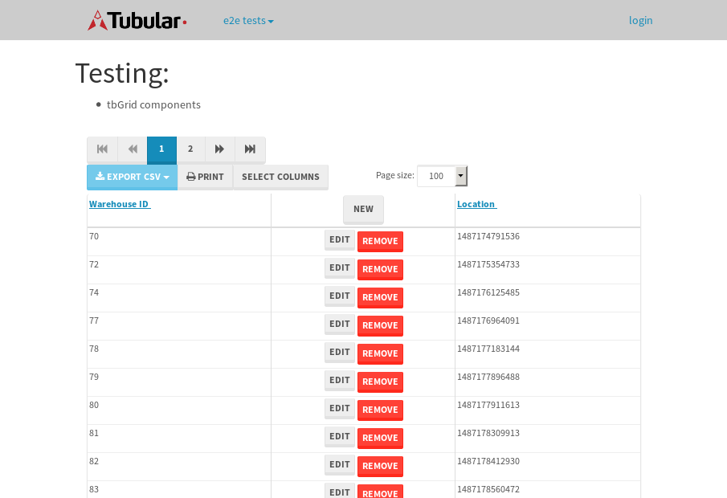

tbColumn.Grid Sorting - 26.179sTests: 5Skipped: 0Failures: 0 should sort data in ascending order then on descending order when sorting by Order Id column - 5.417sTests passed: 100.00%should order data in ascending order when click-sorting an unsorted text column - 4.8sTests passed: 100.00%should order data in descending order when click-sorting an ascending-sorted text column - 5.506sTests passed: 100.00%should order data in ascending order when click-sorting an unsorted date column - 5.134sTests passed: 100.00%should order data in descending order when click-sorting twice an unsorted date column - 5.32sTests passed: 100.00%
tbEmptyForm - 3.24sTests: 3Skipped: 0Failures: 1 should have an empty required field - 0.697sTests passed: 100.00%should not be able to click on save - 0.51sExpected null not to be null null.✗Tests passed: 50.00%should load default value for numeric field - 0.527sTests passed: 100.00%
Tubular Filters.tbColumnFilter - 110.809sTests: 12Skipped: 0Failures: 0 should cancel filtering when clicking outside filter-popover - 9.268sTests passed: 100.00%should disable Value text-input for "None" filter - 6.69sTests passed: 100.00%should disable apply button for "None" filter - 6.585sTests passed: 100.00%should decorate popover button when showing data is being filtered for its column - 11.807sTests passed: 100.00%should correctly filter data for the "Equals" filtering option - 8.743sTests passed: 100.00%should correctly filter data for the "Not Equals" filtering option - 9.485sTests passed: 100.00%should correctly filter data for the "Contains" filtering option - 9.211sTests passed: 100.00%should correctly filter data for the "Not Contains" filtering option - 9.712sTests passed: 100.00%should correctly filter data for the "Starts With" filtering option - 7.416sTests passed: 100.00%should correctly filter data for the "Not Starts With" filtering option - 7.09sTests passed: 100.00%should correctly filter data for the "Ends With" filtering option - 6.72sTests passed: 100.00%should correctly filter data for the "Not Ends With" filtering option - 7.075sTests passed: 100.00%
Tubular Filters.tbColumnDateTimeFilter - 136.764sTests: 12Skipped: 0Failures: 0 should cancel filtering when clicking outside filter-popover - 7.432sTests passed: 100.00%should disable Value text-input for "None" filter - 6.641sTests passed: 100.00%should disable apply button for "None" filter - 7.317sTests passed: 100.00%should clear filtering when clicking on Clean button - 18.068sTests passed: 100.00%should decorate popover button when showing data is being filtered for its column - 11.877sTests passed: 100.00%should correctly filter data for the "Equals" filtering option - 6.796sTests passed: 100.00%should correctly filter data for the "Not Equals" filtering option - 7.464sTests passed: 100.00%should correctly filter data for the "Between" filtering option - 12.058sTests passed: 100.00%should correctly filter data for the "Greater-or-equal" filtering option - 12.404sTests passed: 100.00%should corretlly filter data for the "Greater" filtering option - 12.203sTests passed: 100.00%should correctly filter data for the "Less-or-equal" filtering option - 11.972sTests passed: 100.00%should correctly filter data for the "Less" filtering option - 11.679sTests passed: 100.00%
Tubular Filters.tbColumnOptionsFilter - 80.875sTests: 3Skipped: 0Failures: 0 should cancel filtering when clicking outside filter-popover - 8.93sTests passed: 100.00%should decorate popover button when showing data is being filtered for its column - 11.955sTests passed: 100.00%should filter column-elements in accordance to the selected filter when selecting a single option - 49.242sTests passed: 100.00%
Tubular Filters.tbTextSearch - 48.627sTests: 5Skipped: 0Failures: 0 min-chars is not set - 0.915sTests passed: 100.00%should filter data in searchable-column customer name to matching inputted text, starting from 3 characters - 6.868sTests passed: 100.00%should filter data in searchable-column shipper city to matching inputted text, starting from 3 characters - 12.497sTests passed: 100.00%should show clear button when there is inputted text only - 6.52sTests passed: 100.00%should clear filtering when clicking clear button - 16.349sTests passed: 100.00%
tbForm related components.tbCheckboxField - 6.035sTests: 2Skipped: 0Failures: 0 should save changes on "SAVE" - 2.895sTests passed: 100.00%should discard changes on "CANCEL" - 1.715sTests passed: 100.00%
tbForm related components.tbDropDownEditor - 11.53sTests: 5Skipped: 0Failures: 0 should set initial input value to the value of "value" attribute when defined - 1.91sTests passed: 100.00%should show the component name value in a label field when "showLabel" attribute is true - 2.005sTests passed: 100.00%should show a help field equal to this attribute, is present - 2.368sTests passed: 100.00%should submit modifications to item/server when clicking form "Save" - 2.817sTests passed: 100.00%should NOT submit modifications to item/server when clicking form "Cancel" - 1.925sTests passed: 100.00%
tbForm related components.tbTextArea - 16.563sTests: 7Skipped: 0Failures: 0 should set initial input value to the value of "value" attribute when defined - 2.555sTests passed: 100.00%should be invalidated when the number of chars is not in the range of "min" and "max" attributes - 2.251sTests passed: 100.00%should show the component name value in a label field when "showLabel" attribute is true - 1.709sTests passed: 100.00%should show a help field equal to this attribute, is present - 1.862sTests passed: 100.00%should require the field when the attribute "required" is true - 2.126sTests passed: 100.00%should submit modifications to item/server when clicking form "Save" - 3.141sTests passed: 100.00%should NOT submit modifications to item/server when clicking form "Cancel" - 2.094sTests passed: 100.00%
tbForm related components.tbDateEditor - 12.711sTests: 6Skipped: 0Failures: 0 should set initial date value to the value of "value" attribute when defined - 1.646sTests passed: 100.00%should be invalidated when the date is not in the range of "min" and "max" attributes - 2.111sTests passed: 100.00%should show the component name value in a label field when "showLabel" attribute is true - 1.63sTests passed: 100.00%should show a help field equal to this attribute, is present - 1.911sTests passed: 100.00%should submit modifications to item/server when clicking form "Save" - 2.346sTests passed: 100.00%should NOT submit modifications to item/server when clicking form "Cancel" - 2.36sTests passed: 100.00%
tbForm related components.tbTypeaheadEditor - 16.542sTests: 7Skipped: 0Failures: 0 should show an options list when there is an API-info/component entered-data - 1.918sTests passed: 100.00%should select the option clicked - 1.921sTests passed: 100.00%should show a "delete" button when an option/match is selected, and delete the option if button is clicked - 2.462sTests passed: 100.00%should show a label value equal to the component name when "showLabel" attribue is true - 1.898sTests passed: 100.00%should require a value when "require" attribute is true - 2.869sTests passed: 100.00%should submit modifications to item/server when clicking form "Save" - 2.827sTests passed: 100.00%should NOT submit modifications to item/server when clicking form "Cancel" - 2.074sTests passed: 100.00%
tbForm related components.tbSimpleEditor - 21.466sTests: 9Skipped: 0Failures: 0 should set initial input value to the value of "value" attribute when defined - 1.631sTests passed: 100.00%should be invalidated when the number of chars is not in the range of "min" and "max" attributes - 2.16sTests passed: 100.00%should show the component name value in a label field when "showLabel" attribute is true - 1.645sTests passed: 100.00%should set input placeholder to the value of "placeholder" attribute - 3.49sTests passed: 100.00%should validate the control using the "regex" attribute, if present - 1.925sTests passed: 100.00%should show a help field equal to this attribute, is present - 1.838sTests passed: 100.00%should require the field when the attribute "required" is true - 1.921sTests passed: 100.00%should submit modifications to item/server when clicking form "Save" - 4.25sTests passed: 100.00%should NOT submit modifications to item/server when clicking form "Cancel" - 1.981sTests passed: 100.00%
tbForm related components.tbNumericEditor - 15.653sTests: 7Skipped: 0Failures: 0 should set initial component value to the value of "value" attribute when defined - 2.234sTests passed: 100.00%should be invalidated when the entered number is not in the range of "min" and "max" attributes - 2.272sTests passed: 100.00%should show the component name value in a label field when "showLabel" attribute is true - 1.73sTests passed: 100.00%should show a help field equal to this attribute, is present - 1.696sTests passed: 100.00%should require the field when the attribute "required" is true - 1.789sTests passed: 100.00%should submit modifications to item/server when clicking form "Save" - 3.347sTests passed: 100.00%should NOT submit modifications to item/server when clicking form "Cancel" - 1.972sTests passed: 100.00%
tbForm Connection Error NoModelKey - 2.52sTests: 1Skipped: 0Failures: 0 tbForm connection error functionality - 0.449sTests passed: 100.00%
tbForm Connection Error NoServerUrl - 2.584sTests: 1Skipped: 0Failures: 0 tbForm connection error functionality - 0.479sTests passed: 100.00%
tbGridComponents - 37.533sTests: 6Skipped: 0Failures: 2 should add item with newRow method - 5.112sExpected '173 EDIT REMOVE Please Work' not to be '173 EDIT REMOVE Please Work'.✗Tests passed: 50.00%should add item with newRow method and cancel action - 0.983sTests passed: 100.00%should update item with tbSaveButton - 5.292sTests passed: 100.00%should NOT update item on cancel Update action - 2.132sTests passed: 100.00%should remove item with tbRemoveButton - 21.549sExpected 100 not to be 100, 'should remove the row from the table'.✗Tests passed: 50.00%should NOT remove item on cancel Remove action - 1.039sTests passed: 100.00%
tbGridPager.navigation buttons - 8.813sTests: 1Skipped: 0Failures: 0 should perform no action when clicking on the numbered navigation button corresponding to the current-showing results page - 1.271sTests passed: 100.00%
tbGridPager.navigation buttons.first/non-last results page related functionallity - 3.338sTests: 2Skipped: 0Failures: 0 should disable "first" and "previous" navigation buttons when in first results page - 1.593sTests passed: 100.00%should enable "last" and "next" navigation buttons when in a results page other than last - 1.745sTests passed: 100.00%
tbGridPager.navigation buttons.last/non-first results page related functionallity - 4.204sTests: 2Skipped: 0Failures: 0 should disable "last" and "next" navigation buttons when in last results page - 2.457sTests passed: 100.00%should enable "first" and "previous" navigation buttons when in a results page other than first - 1.747sTests passed: 100.00%
tbGridPager.page navigation - 7.289sTests: 5Skipped: 0Failures: 0 should go to next results page when clicking on next navigation button - 1.484sTests passed: 100.00%should go to previous results page when clicking on previous navigation button - 1.384sTests passed: 100.00%should go to last results page when clicking on last navigation button - 1.642sTests passed: 100.00%should go to first results page when clicking on first navigation button - 1.565sTests passed: 100.00%should go to corresponding results page when clicking on a numbered navigation button - 1.212sTests passed: 100.00%
tbGridPagerInfo - 4.248sTests: 2Skipped: 0Failures: 0 should show text in accordance to numbered of filter rows and current results-page - 1.381sTests passed: 100.00%should show count in footer - 0.53sTests passed: 100.00%
tbHttp - 16.711sTests: 8Skipped: 1Failures: 1 should be authenticated - 2.668sTests passed: 100.00%retrieve data - 2.255sTests passed: 100.00%should not login bad credentials - 2.309sExpected '' to be 'false'.✗Tests passed: 0.00%should have a refresh token - 2.452sTests passed: 100.00%should remove authentication - 2.361sTests passed: 100.00%get method-Is not authenticated - 2.251sTests passed: 100.00%post method-Is not authenticated - 2.414sTests passed: 100.00%should regenerate access token on post - 0s***Skipped***Tests passed: 0%
tbPageSizeSelctor - 9.265sTests: 4Skipped: 0Failures: 0 should filter up to 10 data rows per page when selecting a page size of "10" - 2.093sTests passed: 100.00%should filter up to 20 data rows per page when selecting a page size of "20" - 1.473sTests passed: 100.00%should filter up to 50 data rows per page when selecting a page size of "50" - 2.432sTests passed: 100.00%should filter up to 100 data rows per page when selecting a page size of "100" - 1.813sTests passed: 100.00%
tbRowSelectable - 9.285sTests: 2Skipped: 0Failures: 0 selected rows - 4.963sTests passed: 100.00%unselected rows - 2.746sTests passed: 100.00%
tbSingleForm - 18.323sTests: 8Skipped: 1Failures: 0 should load correct info - 0s***Skipped***Tests passed: 0%should change customer name - 2.521sTests passed: 100.00%should save it - 2.869sTests passed: 100.00%should clear the inputs - 2.445sTests passed: 100.00%should update - 3.033sTests passed: 100.00%should reset editor - 2.304sTests passed: 100.00%should not save if not Changes - 2.4sTests passed: 100.00%should not be able to click on save - 2.751sTests passed: 100.00%


{kind=link}